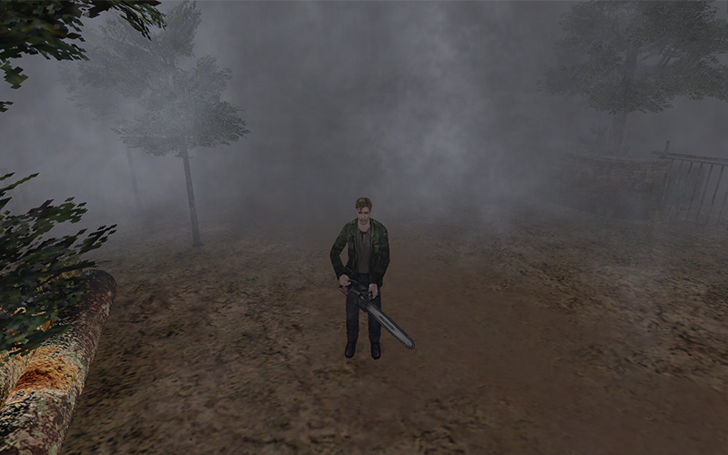
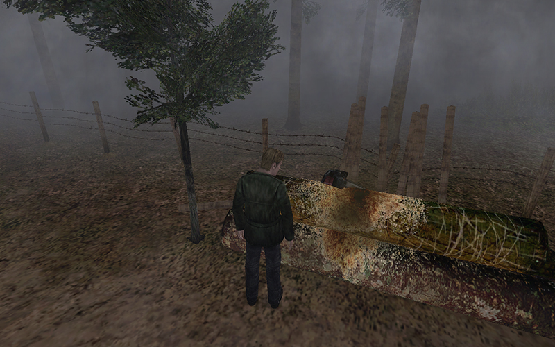
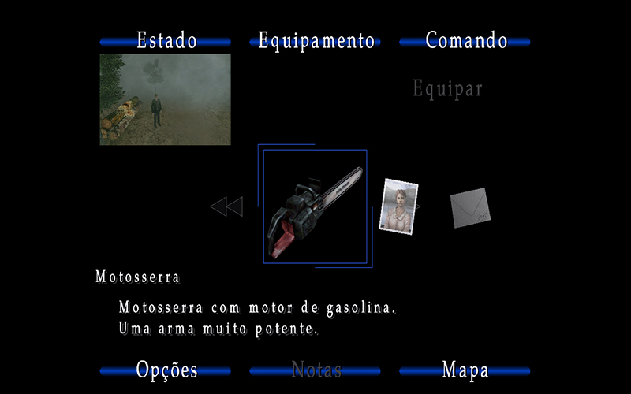
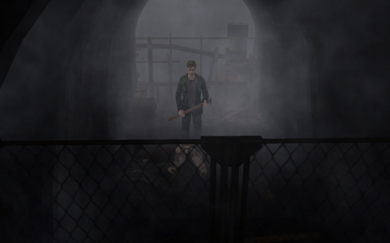
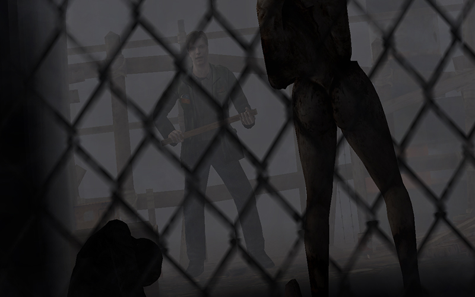
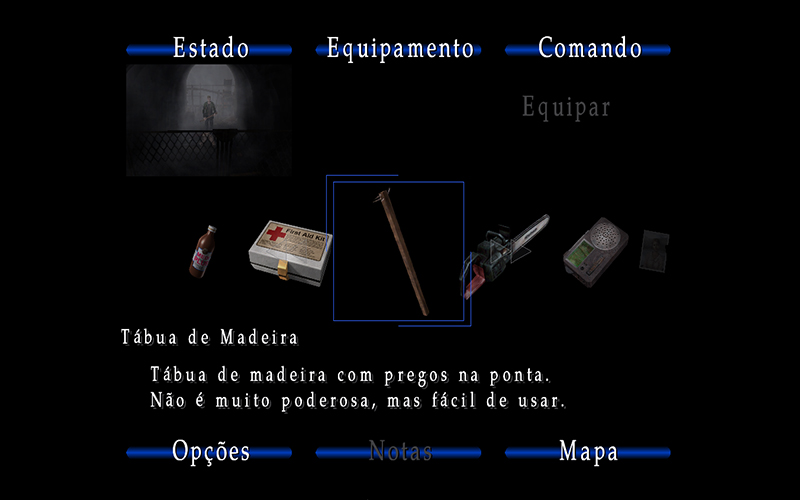

MOTO SERRA

Em Silent Hill 2 é possivel usar uma serra eletrica como arma, porém para você obter tal arma, necessita zerar o game,
ao menos 1 vez em qualquer dificuldade!

A arma está localizada em cima de uns troncos de madeira após encontrar-se com Angela no cemiterio. Após passar pelo portão,
siga pelo caminho de terra, na metade do trageto você vai encontrar uns trcos com uma moto serra ligada. Basta aproximar-se
da serra e aperta o botão de ação para coleta a arma.

Agora basta abrir o inventario equipar a serra e ser feliz xD.
TÁBUA DE MADEIRA

Em silent hill 2 também é possivel pegar uma tábua de madeira para usar como arma. A mesma não tem requisitos como a anterior,
ou seja você vai obter em qualquer gameplay!

Você pega essa "arma" no inicio do game. Na parte em que o James enfrenta o primeiro inimigo, assim que ele atravessa a cerca
e vê o primeiro monstro james arranca o pedaço de tábua da cerca para enfrentar o monstro.

Após a batalha contra o primeiro monstro a tábua fica disponivel no inventario!